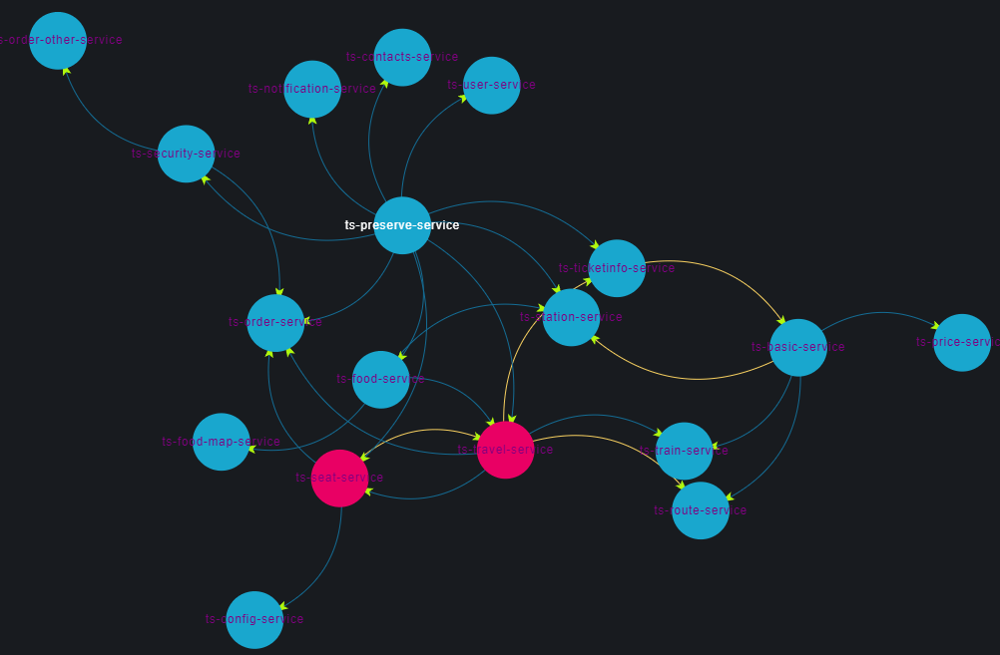
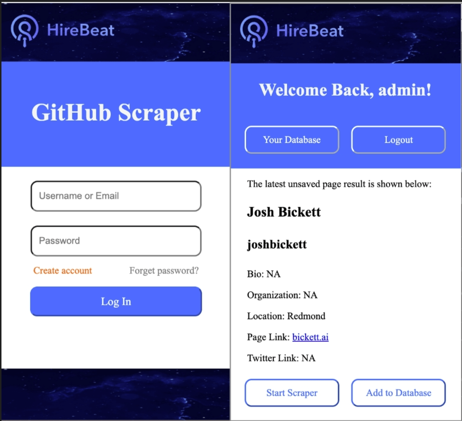
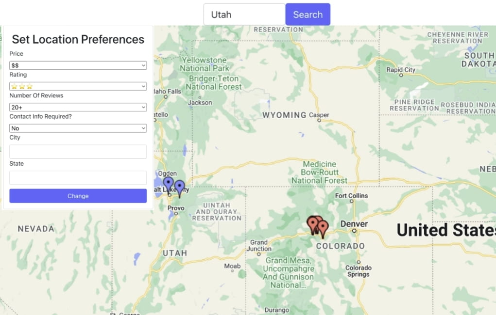
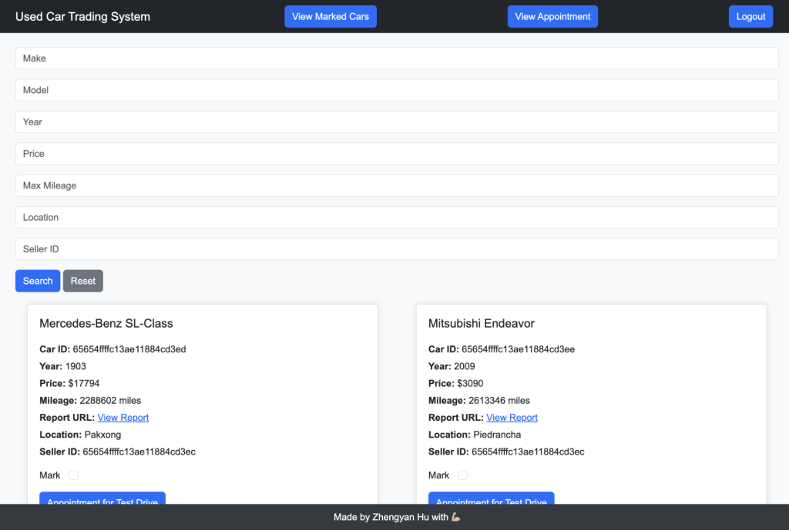

Zhengyan Hu
Software engineer specializing in LLM agent infrastructure — agent runtime, evaluation, and the reliability layers that make agentic systems production-ready. Backed by a strong distributed-systems and backend foundation.
Experience
- Migrated a legacy multi-agent architecture to a modular, skill-based agent framework, decomposing monolithic agent logic into composable, independently testable skill components.
- Built an LLM-as-a-judge evaluation framework scoring agent output on accuracy, relevance, completeness, and coherence, enabling automated quality-regression checks between releases.
- Integrated agent identity authentication into backend services, exchanging user tokens for scoped service identities via an auth SDK, with a feature-flag-controlled rollout and fallback logging.
- Decoupled the service-to-service client for agent orchestration from the main request flow, introducing a clean interface boundary that improved modularity and testability.
- Hardened the release path: added an integration-test stage to the CI/CD pipeline (Jenkins / Argo CD), and built Splunk alerting and log analysis for incident detection and root-cause tracing.
- Owned the full lifecycle of a cloud-native AI evaluation pipeline (Spring Boot, OpenAI API) serving 20+ enterprise clients — from design through deployment and on-call operation.
- Reduced latency 50% and lowered API cost via Redis caching and parallel multi-prompt inference (Java CompletableFuture).
- Designed a fault-tolerant asynchronous pipeline with AWS SQS (3k+ messages/day) and DLQ-based retry logic, achieving a 99.5% success rate with <2s p95 latency under peak load.
- Developed RBAC-based access control for sensitive candidate data, enforcing role-based permissions across backend APIs.
- Built an automated detector for architectural anti-patterns in distributed microservice systems, using DFS-based graph algorithms to identify cyclic dependencies and bottlenecks.
- Architected a real-time telemetry pipeline (Python/Flask) ingesting Jaeger trace data to visualize interactions across 37+ microservices.

Projects
- Implemented a fault-tolerant key-value store using the Paxos consensus algorithm (Java RMI), maintaining strong consistency across 5 replicas; stress-tested a Dockerized multi-node cluster with 500+ concurrent requests under simulated partitions and node failures.
- Architected a serverless monitoring service using SNS/SQS fan-out and AWS Lambda for real-time S3 events; designed DynamoDB GSIs for sub-50ms analytics queries, with CloudWatch-triggered automated remediation.
Earlier coursework & internship projects
- Fiat Network Protocol — TCP-based data-transfer protocol and UDP-based name protocol in Java, using async I/O and SSL, built test-first with JUnit.
- GitHub Scraper Chrome Extension (HireBeat, intern) — full-stack extension with a Flask + jQuery backend, JWT auth, and PostgreSQL, deployed on DigitalOcean.
- Ski Finder — preference-based ski-resort recommender with React + Spring Boot, tested with Spring's framework and deployed on Heroku.



Skills
AI / GenAI: LLM agents, agent runtime & orchestration, LLM-as-a-judge evaluation, prompt engineering, RAG, OpenAI API
Languages: Python, Java, Go, SQL, JavaScript/TypeScript, C/C++
Backend & Systems: Spring Boot, REST APIs, microservices, distributed systems, OOD, data structures & algorithms, JUnit, Git
Cloud & DevOps: AWS (Lambda, S3, SQS/SNS, DynamoDB, CloudWatch, CDK), Docker, CI/CD, Jenkins, Argo CD, Redis, Prometheus